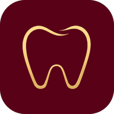

Site de reservas do consultório
Aluguel por hora do consultório para outros dentistas, com agenda ao vivo, app no celular, Pix integrado e um painel completo para a Dra. Thalia.


Aluguel por hora do consultório para outros dentistas, com agenda ao vivo, app no celular, Pix integrado e um painel completo para a Dra. Thalia.
Cada pessoa vê só o que precisa. Só reserva quem tem conta liberada pela Dra. Thalia, e o banco de dados impede que duas pessoas reservem o mesmo horário.
Vitrine do consultório para dentistas que querem conhecer e alugar.
Conta própria, liberada pela Dra. Thalia.
Acesso exclusivo da administradora.
Ninguém reserva sem passar pela Dra. Thalia. Assim, só profissionais conferidos usam a agenda.

Nome, CRO, WhatsApp, e-mail e aceite das regras de uso.

A tela mostra que o cadastro foi recebido e está em análise.

Ela recebe notificação e e-mail e toca em Liberar ou Bloquear.

O dentista recebe um e-mail e já escolhe dia e horário livres.





| Quando | Quem recebe | Como chega |
|---|---|---|
| Cadastro novo | Dra. Thalia | E-mail e notificação para liberar ou bloquear. |
| Acesso liberado | Dentista | E-mail e notificação avisando que já pode reservar. |
| Reserva feita | Dentista e Dra. Thalia | E-mail de confirmação com link para a agenda; notificação para a Dra. Thalia. |
| 2 horas antes | Dentista | E-mail e notificação de lembrete. |
| Cancelamento e vaga aberta | Dra. Thalia, dentista e lista de espera | E-mail e notificação; quem esperava o horário é avisado. |
| Pagamentos | Dra. Thalia e dentista | Notificação de comprovante enviado e de pagamento confirmado. |
| Pagamento pendente | Dentista | E-mail com o Pix e notificação, a cada 3 dias. |
| Mural e problemas | Dentistas / Dra. Thalia | Notificação de aviso novo; e-mail e notificação de problema relatado. |
| Relatório do mês | Dra. Thalia | E-mail todo dia 1º com o resumo do mês anterior. |
cots-consultorio-thalia.vercel.app